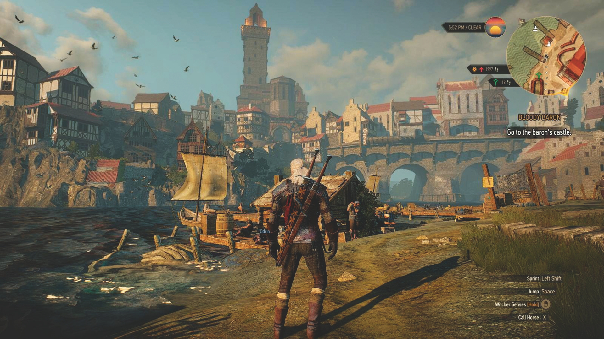

Best top 5 open world adventure games
1. The Witcher 3: Wild Hunt: This game is celebrated for its compelling storyline, memorable characters, and a massive, beautifully crafted world. Players explore a vast landscape filled with quests, monsters, and moral dilemmas.
2. The Elder Scrolls V: Skyrim Special Edition: A classic RPG with a massive open world, Skyrim offers endless exploration, character customization, and a deep lore to uncover. Its modding community further extends the game's lifespan.
3. Grand Theft Auto V: This game offers a detailed, living city of Los Santos with a compelling narrative and a variety of activities to engage in, from heists to online multiplayer adventures.
4. Red Dead Redemption 2: Set in the American West, this game provides a stunningly realistic open world filled with detailed environments, engaging characters, and a gripping story about the end of the outlaw era.
5. Assassin's Creed Valhalla: Players explore a vast and immersive open world as a Viking warrior, engaging in combat, completing quests, and discovering historical settings.